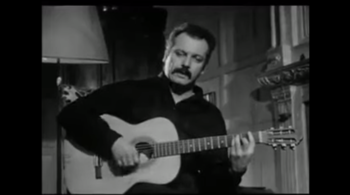

La ronde des jurons
The carol of the swearwords
Georges Brassens (1958)
|
|
Notes:
|
[1] Cette traduction « chantable » diffère de la traduction non rimée de David Yendley (dbarf.blogspot.com/2013/06/la-ronde-des-jurons.html)
pour les 2 couplets. Par contre, je lui emprunte le refrain ainsi que son tableau de correspondance des jurons avec cette précision : "Bigre", "bougre" et leur équivalent anglais "bugger" viennent de "Bulgare". La Bulgarie était le pays d'origine des Bogomiles, à l'origine de l'hérésie cathare. Parmi les accusations formulées contre eux par l'Inquisition, celle de sodomie figurait peut-être en bonne place. "Bougre" signifiait donc à la fois "hérétique" et "sodomite". "Bigre" est apparu beaucoup plus tard, au 18ème siècle, comme la transformation euphémique de "bougre". Les deux mots sont encore en usage mais ont perdu tout caractère injurieux (bougre="chap", bigre!="gosh!"). Il en est de même de plusieurs autres jurons ("parbleu", "nom d'une pipe", "fichtre", "diantre", ) [2] Je lui emprunte aussi ses notes de vocabulaire destinées aux anglophones, tout en faisant mienne sa note introductive, étant rapidement parvenu à la même conclusion que lui : "Je ne me suis pas imposé la tâche impossible de trouver un équivalent anglais précis pour chaque juron français. Je pense qu'il existe des arguments valables qui justifient de considérer un juron comme un bien culturel original, propre à chaque nation." On peut ajouter que le fait que, parmi ces jurons, les blasphèmes soient en écrasante majorité, témoigne paradoxalement du caractère profondément religieux de nos aïeux. [1] This singable translation differs from the unrhymed translation by David Yendley (dbarf.blogspot.com/2013/06/la-ronde-des-jurons.html) for the 2 couplets. But I borrowed the refrain from him, as well as his swearword correspondence table with an addition: "Bigre", "bougre" and their English equivalent "bugger" come from "Bulgare". Bulgaria was the country of the Bogomils, the origin of the Cathar heresy. Among the charges set forth against them by the Inquisition, that of sodomy figured prominently. "Bougre" therefore meant both "heretic" and "sodomite". "Bigre" appeared much later, in the 18th century, as the euphemistic transformation of "bougre". Both words are still in use, but have lost all offensive character (bougre="chap", bigre!="gosh!"). So have several other swear words in the list ("parbleu", "nom d'une pipe", "fichtre", "diantre", ...) [2] I can only approve of D. Yendley's choice: "I have not imposed upon myself the impossible task of finding a precise English equivalent for each French oath. I feel that there are valid arguments which justify regarding an oath as a unique, national, cultural entity" . The fact that, among these swear words, blasphemies are in the overwhelming majority, paradoxically testifies to the deeply religious character of our ancestors. |
a) "La ronde" = a dance performed in a circle, a square dance, a folk dance .(I think "carol"= Old French "carole", a round dance accompanied by singers, from Greek "khoros"=chorus and "aulein"= to play the flute, could be the accurate translation). a1) Gaulois (Gallic) also means "bawdy". A "gauloiserie" is a bawdy story or a bawdiness. b) De bon aloi = honest, respectable, sound (litt. "of sterling quality"; hence the English "alloy") c) Le franc-parler = outspokenness, speaking your mind. d) Par-là . par-ci = here and there, all over the place. e) Frapper à bras raccourcis= to lay into to some-one with your fists. The French argue among themselves the significance of shortened arms. Perhaps the most plausible explanation is that it means: with shortened sleeves, rolled up for the fight. ("sleeves" may translate as "bras de chemise", lit; "arms of a shirt"). f) Défiler - pass by flash by g) Les charretiers= carters. (Refers to the phrase "jurer comme un charretier"= to swear like a trooper, which alludes to a fable by La Fontaine). h) Châtié = polished, refined (literally: castigated). i) Les harengères = the fishwives - a pejorative description as in English. j) Mégère = a cantankerous, evil tempered woman, a shrew. k) Poissard = vulgar, coarse. (Poix= pitch). k1) Hussard: "comme un hussard" or "a la hussarde" (as a hussar would do) means "to behave very rudely". l) Ils ont vécu = If you say something "a vécu", you mean that it has had its day is a thing of the past. m) De profundis is a phrase for a requiem. |
| Swearwords | Lines | Full meanings | Type of oats |
|---|---|---|---|
| morbleu (1612) | 10 | Mort à Dieu (still in use; not offensive) | Swearing on the body of Christ - but minced words |
| ventrebleu (15ème s.) | 10 | Ventre de Dieu | Swearing on the belly of Christ cut open on the cross- but minced word. |
| cornegidouille (1896) | 11 | corne= horn, andouille=chitterlings | An oath invented for the surrealist play « Ubu Roi » |
| sacrebleu (14ème s.) | 11 | Sacré Dieu (still in use; not offensive) | Swearing on the sacred God - but minced word. |
| parbleu (1577) | 12 | Par Dieu (still in use; not offensive) | Swearing on God - but minced word. |
| jarnibleu (1611) | 12 | Je renie Dieu | Denying God-total blasphemy ! -but minced words |
| palsambleu (1540) | 13 | Par le sang de Dieu (still in use; not offensive) | Swearing on the blood Christ shed on the Cross - but minced words |
| cristi (1808) | 14 | Christ | Swearing on Christs name |
| ventre saint-gris (1530) | 14 | Ventre de Dieu | Swearing on the belly of Christ but a substitute noun |
| par ma barbe (?) | 15 | Par mon Dieu | Swearing on God but substitute noun |
| nom d'une pipe (?) | 15 | Nom de Dieu (still in use; not offensive) | Swearing on Gods name, but substitute noun |
| pardi (1608) | 16 | Par Dieu (still in use; not offensive) | Swearing on God - but minced word |
| sapristi (1841) | 16 | Sacré Christ (still in use; not offensive) | Swearing on the sacred Christ - but minced word. |
| sacristi (1808) | 17 | Sacré Christ | Swearing on the sacred Christ - but minced word. |
| jarnicoton (1611) | 18 | Je renie Dieu | Denying God-total blasphemy ! But substitute noun |
| scrogneugneu (19ème s.) | 19 | Sacré nom de Dieu (still in use; not offensive) | Swearing on Gods name but minced words |
| bigre (15. s.) | 19 | Bulgare (still in use; not offensive) | Bugger - but minced word. |
| bougre (1172) | 19 | Bulgare (still in use; not offensive) | Bugger - but minced word. |
| saperlotte (1863) | 20 | Sacré Dieu | Swearing on God but substitute noun |
| cré nom de nom (1866) | 20 | Sacré nom de Dieu | Sacred Name of God. Minced words and substitute noun |
| peste! (17ème s.) | 21 | (still in use; not offensive) | Plague: Swearing on the horrific plagues of medieval Europe |
| pouah (16ème s.) | 21 | (still in use; not offensive) | Expression of disgust as in English |
| diantre (17ème s.) | 21 | Diable (still in use; not offensive) | Devil: Swearing on the Devil - but minced word. |
| fichtre (19ème s.) | 21 | Compound ficher+foutre (still in use; not offensive) | Obscenity |
| foutre (Latin: futuere) | 21 | (still offensive nowadays) | Obscenity |
| bon Dieu ! (1608) | 22 | (still offensive nowadays!) | Swearing on Gods goodness |
| vertudieu (1537) | 23 | Vertu de Dieu | Swearing on Gods innocence |
| saperlipopette (1863) | 24 | Sacré Dieu (still in use; not offensive) | Swearing on God but substitute noun |
| tonnerre de Brest (15 avril 1718) | 24 | Tonnerre de Dieu (still in use; not offensive) | Swearing on Gods thunder- but substitute noun |
| pardieu (1540) | 25 | Par Dieu (pardi!) | Swearing on God |
| jarnidieu (1611) | 25 | Je renie Dieu | Denying God- total blasphemy - but minced word. |
| pasquedieu (?) | 26 | Par le sang de Dieu | Swearing on the blood Christ shed on the cross - but minced words |

Brassens chante "La ronde des jurons" (avec P. Nicolas et J. Favereau